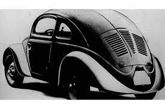

Volkswagen Fusca

-VW- F u S c A -VW-
História
Modelos do Fuscas mais Icônicos:
Vocẽ Sabia?
Video
História

A história do Fusca é uma das mais complexas e longas da história do automóvel. Diferente da maioria dos outros carros, o projeto do Fusca envolveu várias empresas e
até mesmo o governo de seu país, e levaria à fundação de uma fábrica inteira de automóveis no processo. Alguns pontos são obscuros ou mal documentados, já que o projeto inicialmente
não teria tal importância histórica, e certos detalhes perderam-se com a devastação causada pela Segunda Guerra Mundial.
Modelos do Fuscas mais Icônicos:

- O Fusca,
- Um Visual Moderno,
- Beetle Turbo S,
- New Beetle,
- Herbie, o Fusca do Amor,
- O Fusca Conversível,
- O Super Fuscão,
- O Fusca Baja,
- O Fusca Original,
- Os Retornos dos Conversíveis,
Vocẽ Sabia?
- No dia 11 de julho de 1996, saía da linha de montagem da Volkswagen do Brasil, em São Bernardo do Campo, o último Fusca produzido no País..
- 21,5 milhões de Fuscas foram montados em 20 países.
- 3,3 milhões foram montados no Brasil.
- A Volkswagen, à época integrante da Autolatina ao lado da Ford, apostou justamente nessa memória do consumidor como estratégia de vendas
- Cr$ 471.200,00 Foi o preço do primeiro Fusca vendido no Brasil
Video